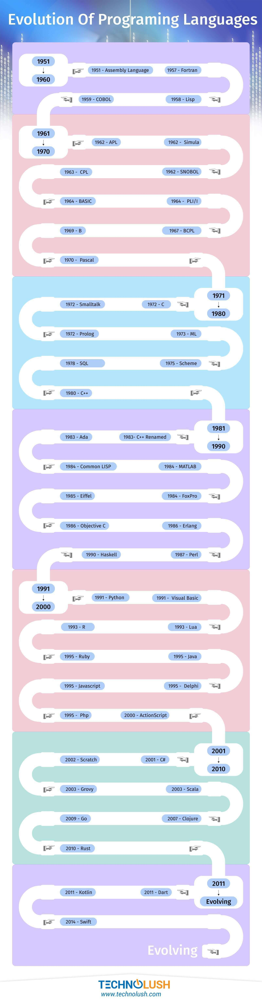

Coding, sometimes called computer programming, is how we communicate with computers. Code tells a computer what actions to take, and writing code is like creating a set of instructions. By learning to write code, you can tell computers what to do or how to behave in a much faster way. You can use this skill to make websites and apps, process data, and do lots of other cool things.
We all have hopes, dreams, and plans for the future. Whether you’re looking for a new opportunity, want to optimize your current job, or are simply searching for a new hobby, coding can help you get closer to your goals. And remember, anyone can learn how to code!
Computer programming is the process of performing a particular computation (or more generally, accomplishing a specific computing result), usually by designing and building an executable computer program. Programming involves tasks such as analysis, generating algorithms, profiling algorithms' accuracy and resource consumption, and the implementation of algorithms (usually in a chosen programming language, commonly referred to as coding). The source code of a program is written in one or more languages that are intelligible to programmers, rather than machine code, which is directly executed by the central processing unit. The purpose of programming is to find a sequence of instructions that will automate the performance of a task (which can be as complex as an operating system) on a computer, often for solving a given problem. Proficient programming thus usually requires expertise in several different subjects, including knowledge of the application domain, specialized algorithms, and formal logic.
Tasks accompanying and related to programming include testing, debugging, source code maintenance, implementation of build systems, and management of derived artifacts, such as the machine code of computer programs. These might be considered part of the programming process, but often the term software development is used for this larger process with the term programming, implementation, or coding reserved for the actual writing of code. Software engineering combines engineering techniques with software development practices. Reverse engineering is a related process used by designers, analysts, and programmers to understand and re-create/re-implement.
Source:wikipedia  Source:technoflush